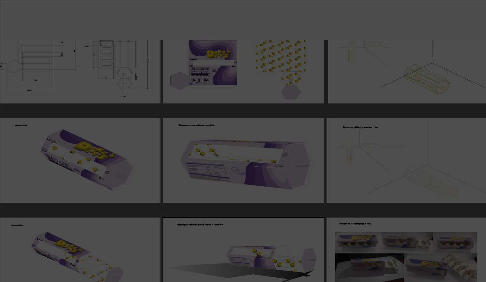

Proyectos
Empaque de donas
Mayo 2024
Diseño de un empaque para donas, abarcando desde la identidad visual hasta la creación del empaque en sí. El trabajo se llevó a cabo utilizando puntos de fuga,monteas,vistas isométricas y perspectivas todo digitalmente. Finalmente, se realizó la impresión y se armo el empaque a escala.
Hecho por:
Fernanda Muciño